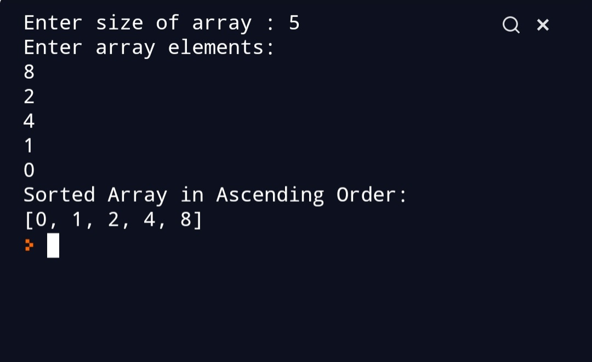

Script Name
Selection Sort Algorithm.
Aim
To write a program for Selection sort.
Purpose
To get a understanding about selection sort.
Short description of package/script
- It is a python program of selectiom sort Algorithm.
- It is written in a way that it takes user input.
Workflow of the Project
- First a function is written to perform Bubble sort.
- Then outside the function user input is taken.
Detailed explanation of script, if needed
Selection sort is a sorting algorithm. Sorting algorithm are used to
arrange the array in particular order.It finds the smallest element and
brings it to the beginning.Two subarrys are maintained.
- The sorted subarray.
-
The unsorted subarray. In every iteration minimum element from the
unsorted array is is picked and moved to the sorted array.
Algorithm
- Set first element as minimum.
-
Compare the minimum element with second element and if the second
element is smaller then assign it to minimum.
- Then,go on comparing minimum to the end of array.
- Swap the first element and minimum.
-
For next iteration start from the second element as first element is
already sorted.
- Repeat these steps till array is sorted.
Example
arr[] = 25 6 10 22 99
1st iteration:
Minimum element is 6 and starting element is 25 so we swap
25 and 6.
The array becomes
arr[]= 6 25 10 22 99
Iteration 2:
Here we start from second element.
Minimum element is 10 and starting element is 25 so we swap
10 and 25.
arr[]= 6 10 25 22 99
Iteration 3:
Here we start from 3rd element.
Minimum element is 22 and starting element is 25 so we swap
25 and 22.
arr[]=6 10 22 25 99
Hence,our array is sorted.
## Setup instructions
Just clone the repository .
Output

Author(s)
Siddhi Bhanushali